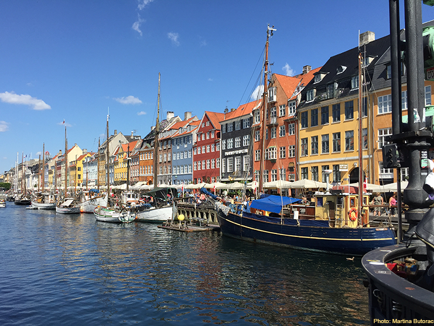

| |
Statement on Coronavirus Disease (COVID-19)
In order to maximize safety of participants and scientific impact of the conference, the organizing committee decided to postpone the conference. The new conference date will be May 5-6, 2022. The venue remains unchanged - the Scandic Copenhagen Hotel, Copenhagen, Denmark.
We are pleased to report that all scheduled keynote speakers have confirmed their interest in participating and that the NovoNordisk foundation has extended their financial support, so we will still be able to guarantee a free conference package for up to 100 participants.
We hope that everyone will manage to weather this pandemic safely and we hope to meet everyone in Copenhagen for another great PTMBact conference!
|
| |
Sponsored by the Novo Nordisk Foundation
Following the successful meetings in Göttingen (2014), Lyon (2016), and Tübingen (2018), the fourth edition of the international meeting dedicated to post-translational modifications (PTMs) in bacteria will be held on 5th and 6th of May 2022, in Copenhagen, Denmark.

The meeting topics will cover all known bacterial PTMs, including protein phosphorylation, uridylation, acetylation, glycosylation, pupylation, targeted degradation and other modifications, as well as the methods used to study them.
To foster scientific exchange, up to 100 participants will be invited free of registration fee (on a first-come-first-served basis), thanks to a generous donation from the Novo Nordisk Foundation.
Registrations, including talk or poster abstracts, should be submitted via this conference website.
The free conference package will include full access to all conference facilities, coffee breaks, two light lunches, one ticket to the famous Tivoli amusement park and a conference dinner. The participants will be responsible for organizing their own travel and accommodation.
The best oral presentation and poster presentation from a young scientist (PhD/PostDoc) will receive a conference prize, sponsored by the Novo Nordisk Foundation.
Keynote Speakers:
Valerie J. Carabetta (Rowan University)
Céline Henry (Université Paris-Saclay)
Christophe Grangeasse (Université de Lyon)
Jorge C. Escalante-Semerena (University of Georgia)
Stuart Cordwell (University of Sydney)
Important Deadlines:
November 1, 2021: Registration and abstract submission opens
February 20, 2022: Registration and abstract submission closes
Scientific Committee:
Ivan Mijakovic (Gothenburg & Copenhagen)
Christophe Grangeasse (Lyon)
Eilika Weber-Ban (Zurich)
Boris Macek (Tübingen)
Julie Hardouin (Rouen)
Karl Forchhammer (Tübingen)
Carsten Jers (Copenhagen)
Local Organizing Committee:
Carsten Jers
Ivan Mijakovic
|